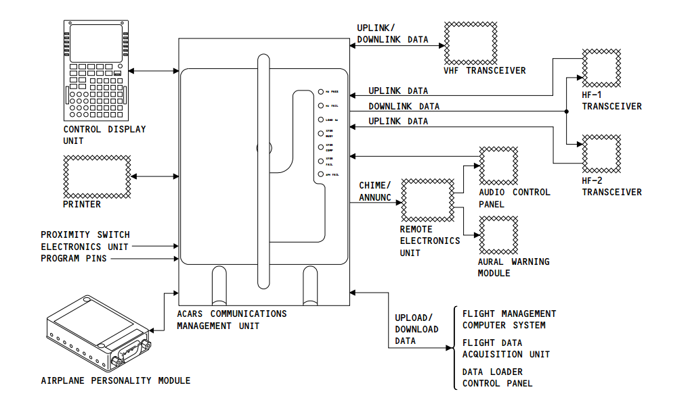

ACARS系统描述
ACARS是一种用于传输信息和报文的数据连接通信系统。
下传链接：从飞机发往地面站的信息和报文。
上传链接：从地面站发往飞机的信息和报文。
报文的内容为：
- 机组身份信息
- Out,off,on,in（OOOI）时间
- 发动机性能
- 飞行状态
- 维护项目信息
- ACARS_1
系统组成
ACARS有以下组件：
飞机信息组件（APM）E4-1架，CMU后方
当CMU得电后，内存为CMU提供飞机身份号和注册号。
可以通过CDU更改飞机的身份信息和注册号。
通信管理组件（CMU）E4-1架
通过VHF或者HF接受地面传来的数字信息（上传链接）和控制空中到地面的信息的发送（下传链接）
电源：
从转换汇流条1获得115V交流电
从热电瓶汇流条获得28V直流电
功能：
- 监控输入信号
- 格式化下传消息
- 监控上传和下传数据，确保正确
- 解码上传的消息
- 控制运行模式
- 控制数据发送
- 给予认可或不认可应答
- 调谐控制VHF无线电
- 给打印机数据
- 控制系统运行
- 给SC-A提供显示在乘客显示屏或机组面板的数据消息
- CMU只处理接受的带有飞机注册号的消息，且在发送时会给下传数据带上飞机注册号。
自检：
- SHG 018-033, 037, 038, 040, 042, 043, 053, 054, 068-073:
前面板上Test按钮会使CMU开始进行BITE自检。
SYSTEM FAIL LED灯亮表示ACARS系统失效
用一个细长金属杆，通过RESET小孔按压RESET按钮，会是CMU做一个上电测试。
- SHG 001-017, 034-036, 039, 041, 044-049, 051, 052, 055-066, 074-081,701-999：
按压手柄下方的RESET按钮做一个上电测试。当按压按钮时，所有LED灯亮。
| 指示灯 | 解释 |
|---|---|
| MU PASS（绿） | CMU通过冷启动测试 |
| HW FAIL（红） | 检测到一个CMU故障 |
| LOAD SW（黄） | 需要给CMU加载软件 |
| XFER BUSY（黄） | CMU正在从数据盘或数据装载控制面板加载数据 |
| XFER COMP（绿） | 数据加载成功 |
| XFER FAIL（红） | 在数据加载过程中自检检测到一个故障 |
| APM FAIL（红） | APM失效 |
控制显示组件（CDU）
控制ACARS的运行并显示ACARS信息
多功能交互显示组件（MIDU）
控制ACARS的运行

其他系统组件：
打印机：
打印ACARS报文和消息
PSEU ：
提供OOOI事件的离散信号
Remote electronics unit（REU）：
分配调谐音提示和灯光提示信号
VHF收发机：
发送数据或者从地面站接受数据
音频控制面板（ACP）：
当ACARS消息需要机组关注时，给机组提醒
SELCAL 控制面板：
提醒机组有需要关注的ACARS消息
HF 收发机和Satellite data unit (SDU)
发送数据或者从地面站接受数据
数据加载控制面板
FMC
系统接口
通信接口
######Call interface
上传链接的消息会告诉机组一个ACARS消息。当消息到达后，CMU给出提示：
音响警告组件的谐音
SELCAL控制面板VHF3灯亮或者ACP面板上VHF3呼叫灯亮
VHF通信接口
CMU发送到VHF3收发机或从VHF3接收所有数据连接，被ARINC429总线控制。
调谐VHF收发机的频率
给VHF收发机的下传链接消息
从VHF收发机接受的上传链接消息
HF通信接口
ARINC429消息，仅用于上传链接和下传链接消息
HF数据无线电收发机。设置在data模式，自动建立与地面站的链接。
离散信号接口
PSEU
CMU从PSEU获取离散信号来决定OOOI时间。然后ACARS发送关于OOOI时间的准备报文。离散信号来自以下组件：
- 空地传感器
- 停留刹车
- 电子舱门
- 前后货舱门，勤务门，登机门
APM
APM从CMU获得电源，APM给CMU提供注册号和飞机认证号。
数字信号接口
输入：
- CDU的数据输入和菜单选择
- 打印机的状态
- FDAU的下传链接报文数据
- 数据加载控制面板的软件加载信息
- FMCS的航线和航班数据
输出：
- 给打印机的报文数据
- 给CDU的数据和菜单选项以及给scratch pad 的警告消息
- 给FMC的航线和航班数据上传链接
- 给FDAU的报文请求上传链接
- 给数据装载控制面板的状态信息